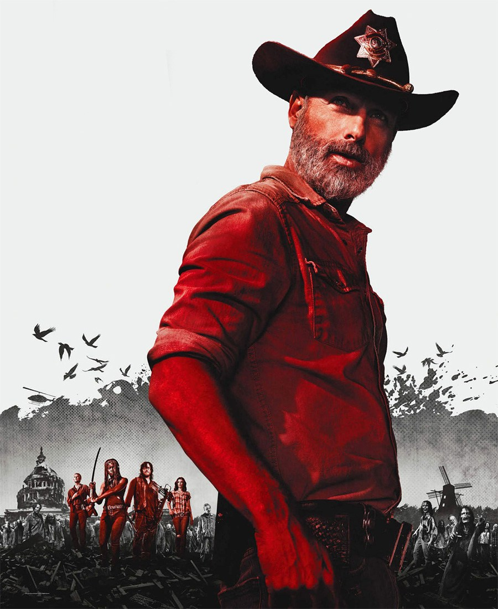
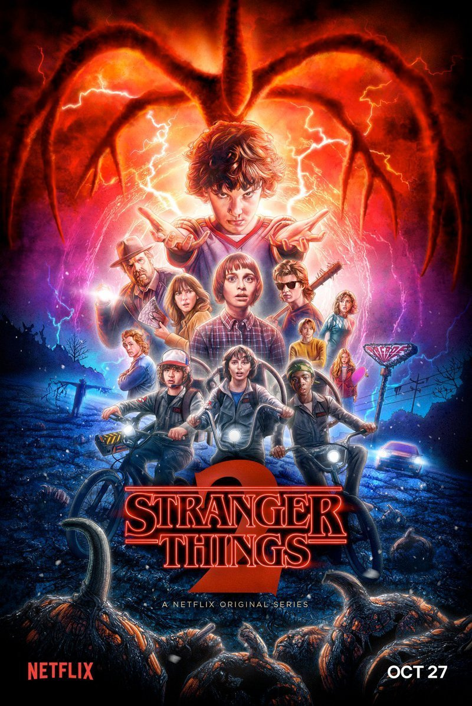
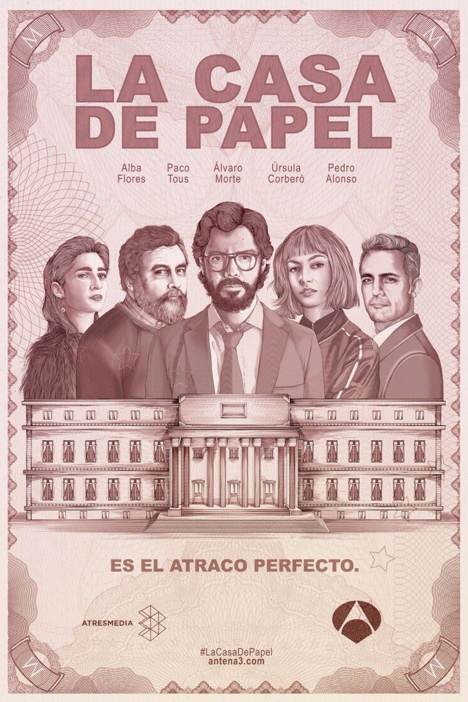

I'm a student at Le Wagon, I was always interested in coding and I decided to join them to learn new skills and hopefully build a career in the future. I love travelling and getting to know new cultures and people.
Contact me|  | The Walking DeadSheriff Deputy Rick Grimes gets shot and falls into a coma. When awoken he finds himself in a Zombie Apocalypse. Not knowing what to do he sets out to find his family, after he's done that he gets connected to a group to become the leader. |
|  | Stranger ThingsWhen Will Byers suddenly goes missing, the whole town of Hawkins, Indiana, turns upside down. Many people are on the search for Will, including his mother, Joyce; his brother, Jonathan; his friends--Mike, Dustin, and Lucas; the police chief, Jim Hopper; and other notable people.story. |
|  | La Casa de PapelA group of very peculiar robbers assault the Factory of Moneda and Timbre to carry out the most perfect robbery in the history of Spain and take home 2,400 million euros. |